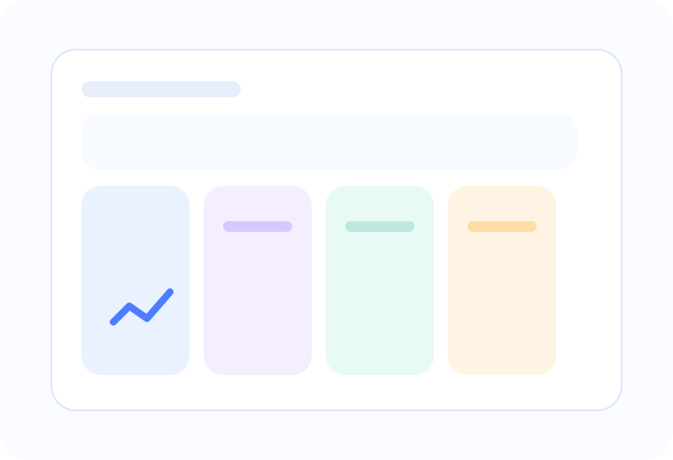

Help teachers focus on teaching, not chasing screens
The faculty experience demonstrates a clean day planner with timetable, attendance, lesson notes, homework publication, marks entry, and parent-facing remarks. This is labelled as a “faculty app” in the demo to keep the product language clear for school stakeholders.

Attendance, fractions revision, homework review.
Lab checklist and experiment remarks.
3 remarks pending after unit test release.
Fast class-wise entry with absence reasons.
Share worksheets, links, and deadlines.
Rubrics, remarks, moderation status.
Parents and students see the same aligned update.
Instruction, record-keeping, and communication in one flow
Open roster, mark attendance, and capture any student observations.
Upload notes, assignments, and next steps directly to student and parent views.
Post marks, qualitative feedback, intervention flags, and AI-assisted weak-topic summary.
| Teacher | Department | Today’s load | Pending actions | Status |
|---|---|---|---|---|
| Megha Jain | Mathematics | 5 periods | Marks release · 1 | On schedule |
| Arun Kamat | Science | 4 periods | Lab notes · 2 | Stable |
| Farah Ali | English | 6 periods | Parent remarks · 3 | Busy |